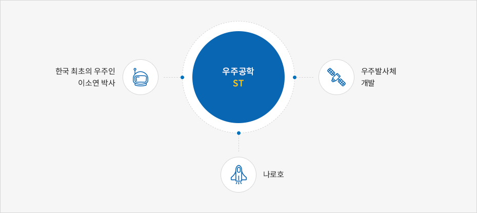

항공우주
- Home
- 주요산업
- 항공우주
항공우주
대전에 소재한 한국항공우주연구원, 대한항공기술원, 한화 대전사업장, 한국과학기술원 인공위성센터가 2013년 나로호 발사를 성공시킴에 따라 대전은 대한민국의 항공우주 산업을 선도하는 도시로 발전하고 있습니다. 또 해당 기관들은 연구개발, 정책연구, 국제협력을 강화하면서 스마트무인기기술개발사업, 성층권비행선체계개발, 위성시스템 개발, 로봇엔진 개발, 항법제어연구 등을 수행하고 있습니다.
2013년에는 대한민국 첫 적외선 우주관측 위성인 과학기술위성 3호(STSAT-3)가 대전 KAIST 인공위성연구센터 지상국과의 교신에 성공했습니다.
우주공학(ST)
한국이 우주개발국으로 도약하는 꿈이 대덕에서 첨단항공기 개발, 인공위성 개발, 우주발사체 개발 등으로 점차 실현되고 있습니다. 우주 발사체 개발을 위한 과학로켓 KSR-의 시험발사, 스마트무인기 개발, 실용 인공위성개발(아리랑2호)에서 한국 최초의 우주인 탄생에 이르기까지 한국의 항공우주기술은 비약적인 발전을 거듭해왔습니다.
